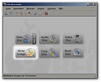
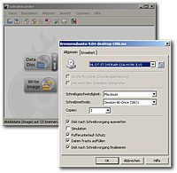
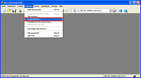
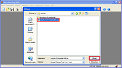
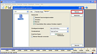
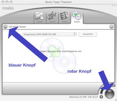
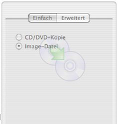
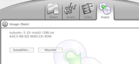

Ubuntu-CD
Ubuntu-CDs/-DVDs werden als ISO-Abbilder verteilt. Häufig werden auch die Begriffe "ISO-Image" oder "CD-Image" verwendet, es handelt sich aber immer um Dateien mit der Endung .iso. Diese Abbilder müssen vom Brennprogramm der Wahl auch wieder als Abbild geschrieben werden, d.h. sie dürfen nicht einfach entpackt oder als Datei auf den Rohling kopiert werden. Wie man so ein ISO-Abbild auf CD/DVD brennt, wird diesem Wiki-Beitrag Schritt für Schritt erklärt, sowohl für Windows als auch für Linux und Mac OS X. Um das ISO-Abbild auf einem USB-Stick abzulegen, gibt es eigene Artikel unter Live-USB.
Hinweis:
Bitte achtet darauf, dass es sich hier um ein ISO-Abbild handelt und nicht um eine Daten-CD. Wird die ISO-Datei falsch gebrannt, dann lässt sich die CD/DVD nicht starten.
Um spätere Lesefehler zu vermeiden, empfiehlt es sich, das Abbild mit einer langsamen Schreibgeschwindigkeit zu brennen.
Ubuntu-CD/DVD brennen¶
Windows 7¶
Seit Windows 7 ist es möglich, eine ISO-Datei ohne zusätzliche Software auf eine CD/DVD zu brennen. Hierzu legt man als erstes einen leeren CD-Rohling in das Laufwerk ein und bricht den Autostart-Dialog ab.
Danach öffnet man das ISO-Abbild durch einen Doppelklick mit dem standardmäßig festgelegten Brennprogramm und brennt es mit diesem. Alternativ klickt man das Image mit der rechten Maustaste  an und wählt in dem erscheinenden Kontextmenü den Eintrag Datenträgerabbild brennen. Die Einstellungen in dem daraufhin erscheinendem Fenster können so belassen werden, ein Klick auf Brennen startet nun den Brennvorgang. Nach ein paar Minuten sollte die CD fertig gebrannt sein, so dass man den Rechner mit dieser starten und so Ubuntu ausprobieren oder installieren kann.
an und wählt in dem erscheinenden Kontextmenü den Eintrag Datenträgerabbild brennen. Die Einstellungen in dem daraufhin erscheinendem Fenster können so belassen werden, ein Klick auf Brennen startet nun den Brennvorgang. Nach ein paar Minuten sollte die CD fertig gebrannt sein, so dass man den Rechner mit dieser starten und so Ubuntu ausprobieren oder installieren kann.
Manche Windows-Benutzer fragen sich, warum das ISO-Abbild plötzlich als .rar-Datei angezeigt wird und nicht gebrannt werden kann. Die Antwort ist einfach: wenn das Programm Winrar installiert ist, welches ISO-Dateien öffnen kann, wird die Endung .iso mit Winrar verknüpft. Dies ändert aber nichts am ISO-Abbild selbst: dieses kann trotzdem ganz "normal" gebrannt werden - aber nicht mit Winrar.
Windows Vista oder älter¶
Unter Windows gibt unterschiedliche Brennprogramme zur Auswahl. Vielleicht ist auf dem eigenen Rechner das bekannte "Nero Burning ROM" installiert? Empfehlenswert sind alternativ das freie und quelloffene Programm InfraRecorder (siehe nächster Abschnitt) oder die werbefinanzierten Programme CDBurnerXP  und ImgBurn (die beiden letzten Programme sind dafür bekannt, unerwünschte zusätzliche Software zu installieren).
und ImgBurn (die beiden letzten Programme sind dafür bekannt, unerwünschte zusätzliche Software zu installieren).
InfraRecorder¶
Infra Recorder  ist ein freies und quelloffenes Brennprogramm. Es unterstützt alle gängigen Brenner und ist recht leicht zu bedienen. Man kann es sich von der Homepage herunterladen
ist ein freies und quelloffenes Brennprogramm. Es unterstützt alle gängigen Brenner und ist recht leicht zu bedienen. Man kann es sich von der Homepage herunterladen  und installieren. Auf Wunsch kann man auch eine portable Version herunterladen, die einfach nur entpackt werden braucht. Eine deutschsprachige Oberfläche ist integriert.
und installieren. Auf Wunsch kann man auch eine portable Version herunterladen, die einfach nur entpackt werden braucht. Eine deutschsprachige Oberfläche ist integriert.
Um die Ubuntu-CD mit Infra Recorder zu brennen, schiebt man einen CD-Rohling ins Laufwerk und bricht den Autostart-Dialog ab. Nun startet man Infra Recorder und wählt "Write Image" aus dem Startassistenten aus.

In dem Dateidialog wählt man nun das ISO-Abbild von Ubuntu aus, die man vorher heruntergeladen haben muss. Die Einstellungen im Brenndialog kann man üblicherweise so lassen, wie sie eingestellt sind.

Abschließend kann man den Brennvorgang starten. Wenige Minuten später sollte die CD fertig gebrannt sein, so dass man den Rechner mit dieser starten und so Ubuntu ausprobieren oder installieren kann.
Nero Burning ROM¶
Nero ist das wohl am weitesten verbreitete CD/DVD-Brennprogramm in der Windows-Welt. Es kann alles, aber die richtige Funktion zu finden, kann eine Weile dauern. Viele Benutzer haben daher Probleme, die CD richtig zu brennen. Nachfolgend eine Schritt-für-Schritt-Anleitung für das Brennen mit Nero:
Nero starten, den Assistenten abbrechen und "Image brennen" auswählen: 
Das Ubuntu-ISO-Abbild auswählen: 
Die richtigen Optionen setzen und den Brennvorgang starten: 
Linux¶
Es gibt mehrere Programme, um unter Ubuntu zu brennen. Je nach Desktop-Umgebung (GNOME, KDE, Xfce oder LXDE) kann ein anderes Programm vorinstalliert sein. Eine Übersicht liefert der Artikel Brennprogramme.
Mac OS X¶
Mit Bordmitteln¶
Ein ISO-Abbild kann man unter OS-X ohne zusätzliche Programme brennen. Die Bordmittel, die Apple mitliefert, reichen aus. Schritt-für-Schritt-Anleitung für das Brennen mit Bordmitteln:
Finder aufrufen
Programme
Dienstprogramme: "Festplatten-Dienstprogramm" öffnen
Ablage - Image öffnen
ISO-Abbild auswählen
Brennsymbol oben links drücken
Roxio Toast 6¶
Roxio Toast ist das Standard-Brennprogramm unter Mac OS X. Damit lässt sich das ISO-Abbild komfortabel brennen. Schritt-für-Schritt-Anleitung für das Brennen mit Toast 6:
Toast aufrufen: 
Register "Kopie" anklicken.
steht vermutlich auf "CD/DVD-Kopie". Umstellen auf "Image-Datei". Dazu blauen Knopf betätigen, Seitenleiste fährt aus. Anklicken: 
Dann das ISO-Abbild in den Kopierbereich ziehen: 
Roten Knopf drücken
Problembehebung¶
Wenn die CD korrekt gebrannt wurde und beim Starten das CD-Menü korrekt erscheint aber das System sich danach aufhängt, dann findet man im Artikel Ubuntu-CD Problembehebung dazu einiges an Lösungen.
- Erstellt mit Inyoka
-
 2004 – 2017 ubuntuusers.de • Einige Rechte vorbehalten
2004 – 2017 ubuntuusers.de • Einige Rechte vorbehalten
Lizenz • Kontakt • Datenschutz • Impressum • Serverstatus -
Serverhousing gespendet von